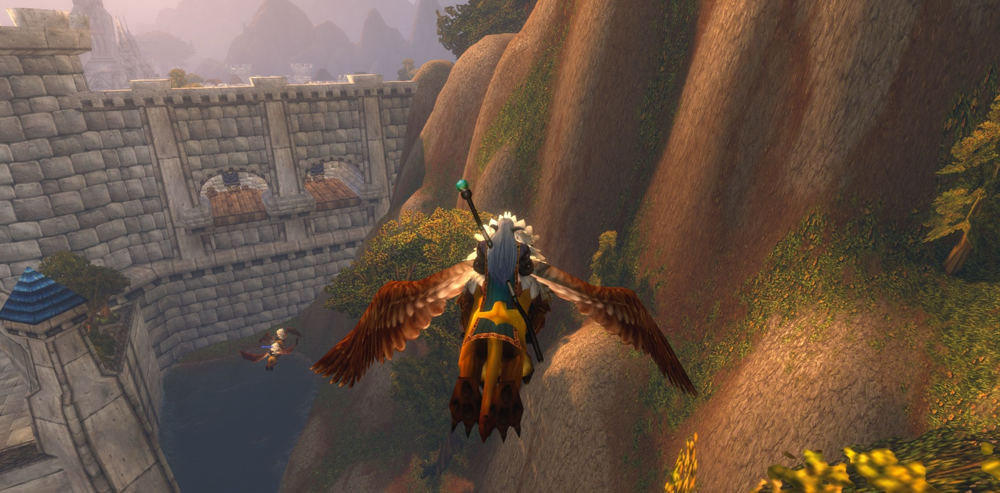
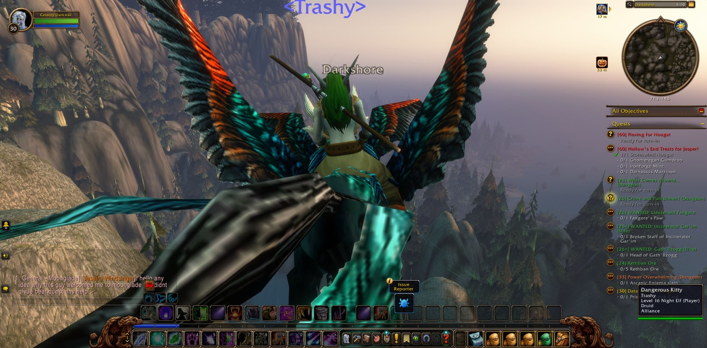

Cassidy Darkstar set out from the Deepwater Tavern in Menethil Harbor and went up through Dun Morogh to Ironforge. In Tinker Town he laid down two errands, Castpipe's Task and Klockmort's Essentials, and took up others in their place: The Day After, Data Rescue, The Grand Betrayal and Essential Artificials. In the Library he was given the Mythology of the Titans to seek. In the Forlorn Cavern he brought the matter of Knowledge in the Deeps to its end. Then he took the long road south, through Searing Gorge and the Burning Steppes and down into Elwynn Forest, and came to Stormwind. There, in the Mage Quarter, Retrieval for Mauren was seen through.


From there he passed on into the Redridge Mountains and came to Lakeshire. He found Oslow's Toolbox beside Lake Everstill. For the Everstill Bridge he gathered rivets and pikes in the Redridge Canyons. At Alther's Mill he slew twelve greater tarantulas and broke six of their eggs. On the boards of Lakeshire he took up the bounties against Lieutenant Fangore, Gath'Ilzogg and Incinerator Gar'im. At Stonewatch Keep he fell once and rose again and went on. For a brief while Aimes, Angry, Thordin and Shadow kept company with him there, before each went their own way. After that he carried Wiley's Note west to Gryan Stoutmantle at Sentinel Hill, then to Mathias Shaw in the house of SI:7, and back again to Westfall. In Moonbrook he found a mysterious message, and the long errand of the Defias Brotherhood moved one step nearer its end. He went down into Gnomeregan as well and slew addled lepers, but he did not stay there long.


He came to Loch Modan by the North Gate Pass. At Algaz Station he recovered the miners' gear from the Silver Stream Mine, and by the shores of The Loch he found Bingles' scattered tools one by one. He walked the land from Stonewrought Dam to Mo'grosh Stronghold until there was no corner of it he had not seen. In Thelsamar he was set to catching tunnel rats, and he finished that task. Back in Dun Morogh he took eight wendigo manes in The Grizzled Den and won back stolen blasting powder at Gol'Bolar Quarry and Helm's Bed Lake.


Then he returned to Stormwind and went down into the Stockade. Blessed the priest went with him at first. After her came Licht, Kaidie, Shinon and Zeno, who stood beside him through most of that dark place, and Garrett the warrior joined them only briefly near its end. Together they put down the uprising and overcame Targorr the Dread, Kam Deepfury, Hamhock and Bazil Thredd. Last of all they defeated Dextren Ward, and Cassidy took his hand for Crime and Punishment. Many pictures were taken as they went. Afterward, in Old Town, Cassidy laid down The Color of Blood and came into his thirtieth level, and a picture marked that moment as well.


The lighter errands of Hallow's End then took him far and wide. He flexed for Innkeeper Allison and was given nougat, then journeyed by Nighthaven in Moonglade, across Darkshore and over the Veiled Sea to Darnassus. There he danced for Innkeeper Saelienne and received marzipan for Jesper. From Menethil he went once more to Ironforge, where Rambleon, Wes, Banished, Natalya and, for a moment, Maru joined him. With them he walked past Iceflow Lake to the gate of Gnomeregan, and there he stood with the road before him.

